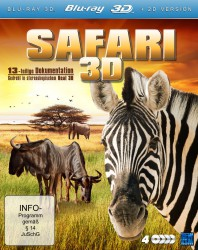

 
 IMDB-Wertung: 7.0 / 10
IMDB-Wertung: 7.0 / 10  Metascore:
Metascore: 
Erfahren Sie einen unvergesslichen Einblick in die großartige Tier- und Pflanzenwelt Afrikas. Begleiten Sie uns in das Land der ewigen Sonne und besuchen Sie mit Safari 3D die artenreichen Reservate und Nationalparks dieses faszinierenden Kontinents. Auf Ihrer Rundreise begegnen Ihnen neben den so genannten Big Five – Büffel, Elefant, Löwe, Leopard und Nashorn – viele weitere Tiere in freier Wildbahn. Geparden, Hyänen, Gnus, Antilopen, Flusspferde, Zebras und Giraffen ganz hautnah. Nutzen Sie diese einmalige Gelegenheit, verschiedenste Tierarten in ihrem ureigenen Territorium zu beobachten und kennen zu lernen. Wissenswerte Kommentare vertiefen dabei Ihren Wissensstand über die einheimische Flora und Fauna. Oder wussten Sie, dass das größte Reptil des Kontinents ein Krokodil ist, der größte Vogel der Afrikanische Strauß und der längste Fluss der Nil?
Jahr: 2011
Dauer: 29 Minuten
FSK: 0
Land: Studio: Tonspuren:
Untertitel: Deutsch,
Auflösung: 1080p (1920x1080) Größe: 3461 MB
Genre: Dokumentation
Regisseur: David Keane
Drehbuch:
Soundtrack: Sherri Chung
Darsteller:
Datei: X:\Dokumentationen\Tiere\Safari 3D\tvp-safari3de01-1080p-br3d.mkv seit 20.01.2016
Festplatte: HD Serien(SU-Z)+Dokus+Musik
 Es gibt insgesamt 37 Filme in der Gruppe 'Dokumentationen\Tiere'
Es gibt insgesamt 37 Filme in der Gruppe 'Dokumentationen\Tiere'